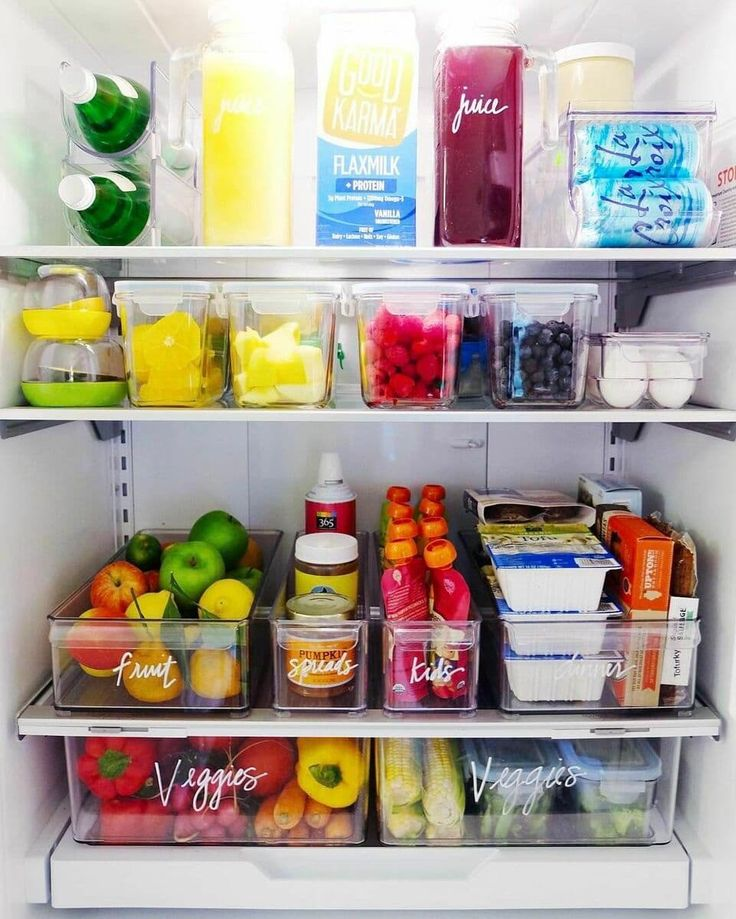

Как сохранить порядок в доме после его организации
2020.10.11 01:02
Лайфхаки | Полезные советы Войти Регистрация Войти Регистрация
Новые комментарии
Ольга Секрет японок для фарфоровой и гладкой кожи 2 часа назад Это делать каждый день ? Галина Буч Кисель всемогущий или очищение и исцеление организ... 5 часов назад Из приведенных овсяный и еще малиновый. Valentina Кисель всемогущий или очищение и исцеление организ... 7 часов назад А какой из приведенных кисеей вы принимали? Нэлли Зачем оформлять на бытовую технику подписку 9 часов назад Разве это не рассрочка называется? Нэлли Запеченный в духовке лук как уникальное оздоровля... 9 часов назад 4. Печеный лук необходимо почаще употреблять в пищ... Lola Кисель всемогущий или очищение и исцеление организ... 1 день назад Интересно. Надо попробовать.Спасибо! Юлия Как научиться правильно забирать и отдавать энерг... 1 день назад Спасибо. Заставляет задуматься. Наталья Запеченный в духовке лук как уникальное оздоровля... 1 день назад Мне тоже интересно, как запекать? валерий Запеченный в духовке лук как уникальное оздоровля... 1 день назад Спасибо за совет. Галина Буч Кисель всемогущий или очищение и исцеление организ... 1 день назад Когда у меня были приступы панкреатита, по совету ... Нинушка Как признаться себе, что "Я слишком стapа для этой... 1 день назад И моя мама всё сегодня ночью МарГо Как признаться себе, что "Я слишком стapа для этой... 1 день назад Да, я тоже только в 40 это поняла, к сожалению Наталья Запеченный в духовке лук как уникальное оздоровля... 1 день назад Как правильно запекать лук? На фото лук в масле. У... Людмила Как научиться правильно забирать и отдавать энерг... 1 день назад Полезная воодушевляющая статья. Спасибо. Lusero 10 правил состоявшейся женщины от Михаила Лабковс... 1 день назад jesli vi ne vstrecali takih zenscin, to ja vstre... Ольга Цитаты Дейла Карнеги, за которые стоит его поблаго... 1 день назад очень хорошие советы Елена Как научиться правильно забирать и отдавать энерг... 1 день назад Спасибо. Было очень интересно почитать. Евгения 10 правил состоявшейся женщины от Михаила Лабковс... 2 дня назад Ну даааа)) Черным по белому написано, что у госпо... Татьяна Длинный плащ: фасоны, которые рекомендуют дизайне... 2 дня назад Из всех я могла только два рассмотреть. Модели их ... Lola Как признаться себе, что "Я слишком стapа для этой... 2 дня назад Если тело в 95 лет не может глотать, то это значит... Войти РегистрацияВойти на сайт с помощью соцсетей
Одноклассники Mail.ru ВКонтакте Яндекс Google Facebook Yahoo! Новые материалы от 10 июляКак сохранить порядок в доме после его организации
Как сохранить порядок в доме после его организации
Поддержание порядка не должно быть сложным и трудозатратным, и не должно требовать придумывания каких-то изощренных способов. Чтобы системы работали как хорошо смазанный механизм, нужно выяснить, как вы используете свой дом и свои вещи и построить вокруг этого свою организацию.Когда вы организуете свой дом с учетом ваших потребностей, вы можете найти множество творческих способов хранить вещи там, где они больше всего нужны и упростить их использование и уборку.
Ваш дом не должен быть непрактичным
Даже если ваше жилище выглядит чистым и аккуратным, оно не будет в порядке, если созданная вами организация слишком сложна для поддержания. Дом будет практичным и функциональным, если каждая вещь имеет свое место, легко доступна, когда это необходимо и легко возвращена на место после использования. Вы будете более заинтересованы содержать вещи в порядке, когда в этом есть практический смысл.
Организуйте вещи на основе того, как вы их используете
Вы используете чистящие средства в ванной комнате, и это то место, где они должны находиться. Если вы храните их на верхней полке в кладовке или на балконе, вам придется проделать лишний путь, чтобы принести их в ванную. Со временем это приведет к тому, что ванная будет убираться не так часто, как это необходимо или к средствам, которые не используются, потому что вам не хочется за ними идти. Если средства для чистки хранятся под раковиной или на полке в ванной, вы легко и быстро их достанете и уберете обратно.
Это нормально, если ваш дом выглядит так, будто там живут люди
Нет ничего плохого в том, что на спинке дивана лежит плед, если вы любите кутаться в него по вечерам за книгой или перед телевизором. Детские игрушки тоже не обязательно должны находиться исключительно в детской комнате. Они могут быть в небольшом контейнере в гостиной или на кухне. Люди часто пользуются такими вещами как зарядные устройства, очки, кухонные весы вовсе не обязательно всякий раз их убирать, чтобы очистить поверхности. Не усложняйте себе жизнь. Цель в том, чтобы любую вещь можно было легко найти и использовать, а не в том, чтобы сделать свой дом глянцевой фотографией безупречного интерьера, в котором никто не живет.
Следите за тем, что работает, а что нет
Используя планировщик или ежедневник, вы можете отслеживать приемы, которые помогают вам и методы, которые хорошо звучат в теории, но на практике создают вам сложности. Всегда чистый, организованный дом великая цель, но реальность повседневной жизни не всегда позволяет вашему дому быть таким чистым, как бы вам хотелось. Придерживайтесь этих основных принципов, и вы сможете поддерживать достаточный порядок и наслаждаться им, не создавая себе дополнительных проблем.
Помните, что в вашем доме живут люди, и их комфорт и удобство важнее, чем необходимость иметь «идеальный» дом. В конце концов, идеальный дом это место, в котором вы счастливы и хорошо себя чувствуете.
Добавить в закладки- Как сохранить порядок в доме.
- Как сохранить порядок в доме наведение порядка в квартире ...
- 9 советов, как поддерживать порядок в доме | homify | homify
- 5 методов Как сохранить порядок в доме - 100500metod
- порядок в доме? да ну, что вы... у меня трое детей... А ...
- Как навести порядок в доме за 28 дней: strana_flymamia ...
- Порядок в доме и в голове | karpachoff.com
- Как раз и навсегда навести порядок в доме
- Шикарные идеи как сохранить порядок в доме » 1000prikolov ...
- Как провести уборку в квартире, доме: периодичность и ...
- Как сохранить порядок в доме.
Возможно, вы не раз удивлялись, как в некоторых домах всегда царствуют порядок и чистота. Вы думаете, что для этого нужно много времени, но это не всегда так. Просто нужно упорство и выполнение рутинных действий ...
- Как сохранить порядок в доме наведение порядка в квартире ...
Уборка в доме – это не всегда приятное занятие, однако проводить ее необходимо. Как правильно подойти к этому вопросу и обеспечить максимальную чистоту в жилом
- 9 советов, как поддерживать порядок в доме | homify | homify
Все о том, как отключить газ в квартире для тех, кто хочет перейти с газа на электричество или отказаться от газа по другим причинам. Преимущества и недостатки такого решения, порядок действий, документы, возможнфе ...
- 5 методов Как сохранить порядок в доме - 100500metod
Как сохранить порядок в доме. Проблема сохранения уюта и порядка в доме волнует многих женщин. Так сложно в повседневной суете найти время для уборки и разгребания накопившихся завалов.
- порядок в доме? да ну, что вы... у меня трое детей... А ...
Скоро весна! Значит пора вздохнуть поглубже. Чувствуете, что нечем дышать? ПЫЛЬ!!! Итак генеральная уборка ужасает своими масштабами...сразу опускается одна рука, потом вторая.... И глаза хочется закрыть, чтоб не видеть ...
- Как навести порядок в доме за 28 дней: strana_flymamia ...
Как создать такую атмосферу в доме, чтобы каждый член семьи чувствовал себя в нём хозяином, заботился о чистоте и уюте и поддерживал порядок. Вот тут у меня затык.
- Порядок в доме и в голове | karpachoff.com
Как сохранить порядок в доме Работа, готовка, стирка, глажка, уроки с детьми – это далеко не все, чем занимается женщина в течение одного дня.
- Как раз и навсегда навести порядок в доме
Навести порядок в доме проще, чем поддерживать в нем порядок. Вот несколько правил, которые помогут в этом: Первое правило Нужно сортировать и избавляться от ненужного!
- Шикарные идеи как сохранить порядок в доме » 1000prikolov ...
Как похудеть в домашних условиях(без рекл 5 методов Как сохранить порядок в доме 5 лучших методов борьбы с похмельем УТОПЛЕНИЕ: ВИДЫ, ПРИЗНАКИ ,Первая помощь.
- Как провести уборку в квартире, доме: периодичность и ...
Шикарные идеи как сохранить порядок в доме. Дома у каждой девушки, как вы знаете, полным-полно всяких мелочей. И все кисточки, сережечки, резиночки, карандашики непременно необходимо для ...
Возможно, вы не раз удивлялись, как в некоторых домах всегда царствуют порядок и чистота. Вы думаете, что для этого нужно много времени, но это не всегда так. Просто нужно упорство и выполнение рутинных действий ...
Уборка в доме – это не всегда приятное занятие, однако проводить ее необходимо. Как правильно подойти к этому вопросу и обеспечить максимальную чистоту в жилом
Все о том, как отключить газ в квартире для тех, кто хочет перейти с газа на электричество или отказаться от газа по другим причинам. Преимущества и недостатки такого решения, порядок действий, документы, возможнфе ...
Как сохранить порядок в доме. Проблема сохранения уюта и порядка в доме волнует многих женщин. Так сложно в повседневной суете найти время для уборки и разгребания накопившихся завалов.
Скоро весна! Значит пора вздохнуть поглубже. Чувствуете, что нечем дышать? ПЫЛЬ!!! Итак генеральная уборка ужасает своими масштабами...сразу опускается одна рука, потом вторая.... И глаза хочется закрыть, чтоб не видеть ...
Как создать такую атмосферу в доме, чтобы каждый член семьи чувствовал себя в нём хозяином, заботился о чистоте и уюте и поддерживал порядок. Вот тут у меня затык.
Как сохранить порядок в доме Работа, готовка, стирка, глажка, уроки с детьми – это далеко не все, чем занимается женщина в течение одного дня.
Навести порядок в доме проще, чем поддерживать в нем порядок. Вот несколько правил, которые помогут в этом: Первое правило Нужно сортировать и избавляться от ненужного!
Как похудеть в домашних условиях(без рекл 5 методов Как сохранить порядок в доме 5 лучших методов борьбы с похмельем УТОПЛЕНИЕ: ВИДЫ, ПРИЗНАКИ ,Первая помощь.
Шикарные идеи как сохранить порядок в доме. Дома у каждой девушки, как вы знаете, полным-полно всяких мелочей. И все кисточки, сережечки, резиночки, карандашики непременно необходимо для ...
